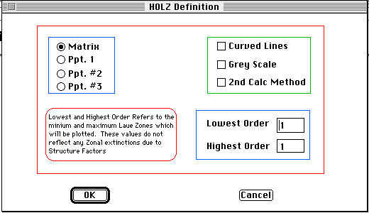

Distributed By: Virtual Labs
HOLZ Line Definition Dialog Box
PATH...File Menu:New:e-diffract::HOLZ...
PATH...{HOLZ}:Define Menu::Define Pattern

HOLZ Line Definition Dialog Box
The Define HOLZ Dialog box is found under the Define menu in the HOLZ object.
It is used to specify:
- Crystal orientation.
- Number of Laue zones to be determined.
- Whether the lines will be plotted with a linear grey scale.
- Whether curved (slow) or straight lines will be used.
- Which calculation model to use.
The HOLZ object calculates a kinematic approximation for the deficiency
lines in the central diffraction disk.
Setting the orientation is very similar to that for an SAD or Laue back
scattered plot. First determine the zone axis and then, if slightly off
axis, rotate the crystal by degrees using the Ir. Zone Axis Calculated:
option. Determine the rotation of the crystal towards a given zone axis
(down a specific g-vector) and then set the distance for the Laue or symmetrical
position in millimeters based on the camera constant..i.HOLZ Lines:Setup
Dialog:Ir. Zone Axis;
Use the lowest order and highest order editable text boxes to set the number
of Laue orders to calculate. Desktop Microscopist does not compensate for
crystals which have non-reflecting Laue zones. For certain crystals, if
only the first order of HOLZ lines are specified, the results may not include
any lines whatsoever.
The .i.HOLZ Lines:Setup Dialog:2nd Calculation Method; option refers to
an article by A. Eades which discusses the two methods for calculating HOLZ
line positions using a kinematic approximation. In this article, he suggests
that the two methods be compared and the range of error between the two
be used as a guide to accuracy. Desktop Microscopist's default method is
the technique that Eades believes is more theoretically acceptable. By checking
the 2nd Calculation Method, Desktop Microscopist will immediately reposition
the HOLZ lines based on the second approximation.
Author: J.ames T.
Stanley
 Desktop
Manual:Dialog Boxes
Desktop
Manual:Dialog Boxes
Distributed By: Virtual Labs
Last Updated:1/12/96 Sat, Apr 27, 1996